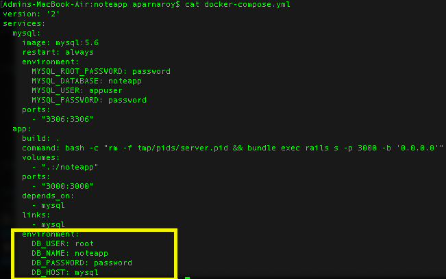

Pre-requisites


Containerization is an approach to get software to run reliably when moved from one computing environment to another. This could be from a developer's laptop to a test environment, from a staging environment into production, and perhaps from a physical machine in a data center to a virtual machine in a private or public cloud.
Software developers solve this problem by running software in ‘containers’ in the cloud.
A container consists of an entire runtime environment: an application, plus all its dependencies, libraries and other binaries, and configuration files needed to run it, bundled into one package. By containerizing the application platform and its dependencies, differences in OS distributions and underlying infrastructure are abstracted away. And the best known and most widely used free and open source container management systems is Kubernetes.
Docker is the company driving the container movement and the only container platform provider to address every application across the hybrid cloud. Docker is an open source software platform to create, deploy and manage virtualized application containers on a common operating system , with an ecosystem of allied tools.
Kubernetes is an open source container-orchestration system that automates Linux container operations. It can be deployed as a platform-providing service.
It eliminates many of the manual processes involved in deploying and scaling containerized applications. In other words, you can cluster together groups of hosts running Linux containers, and Kubernetes helps us easily and efficiently manage those clusters. These clusters can span hosts across public, private, or hybrid clouds.
Kubernetes is a prevalent open-source system however, maintaining the service can be difficult and expensive. For that reason, it is easy to find platforms offering Kubernetes as a managed service.
Most popular services currently available: Google Kubernetes Engine (GKE), Azure Kubernetes Service (AKE), and Amazon Elastic Container Service for Kubernetes (Amazon EKS).
| Features & Services | Google Kubernetes Engine | Azure Kubernetes Service | Amazon Elastic Container Service for Kubernetes |
|---|---|---|---|
| Creator | Microsoft | Amazon | |
| Offerings | General Availability | General Availability | General Availability |
| Version | 1.10 | 1.9 | 1.10 |
| Upgrades | Auto/On demand | On Demand | On Demand |
| Auto scale | Yes | Self-Deployed | Self-Deployed |
| Network Policy | Yes | Self-Deployed | Self-Deployed |
| Load Balancer | Yes | Yes | Yes |
| Management via CLI | Complete | Complete | Complete |
Kubernetes can expose a container using the DNS name or using their own IP address. If traffic to a container is high, Kubernetes is able to load balance and distribute the network traffic so that the deployment is stable.
Kubernetes allows us to automatically mount a storage system of our choice, such as local storages, public cloud providers, and more.
We can describe the desired state for our deployed containers using Kubernetes, and it can change the actual state to the desired state at a controlled rate.
Kubernetes allows us to specify how much CPU and memory (RAM) each container needs. When containers have resource requests specified, Kubernetes can make better decisions to manage the resources for containers.
Kubernetes restarts containers that fail, replaces containers, kills containers that don’t respond to our user-defined health check, and doesn’t advertise them to clients until they are ready to serve.
Kubernetes lets us store and manage sensitive information, such as passwords, OAuth tokens, and ssh keys. We can deploy and update secrets and application configuration without rebuilding our container images, and without exposing secrets in our stack configuration.
Create a project directory named noteapp.
mkdir noteapp
Instead of going with installation of ruby, rails gem and creating application using rails new command. We start with the Gem file.
vi Gemfile
Following is the Gem file content:
Also, create an empty Gemfile.lock which we will need to run the bundle install within docker.
touch Gemfile.lock
Create a file called Docker File. Please note that the name of the file has to be "Dockerfile" with "D" as capital.
vi Dockerfile
For the noteapp application, the base image for the application's docker image is Ruby. We can pick the latest version of Ruby from the Docker hub website : https://hub.docker.com/_/ruby
Now, let’s create our first Docker Compose file. All Docker Compose files are YAML files. This file is to define the services involved for the application.
vi docker-compose.yml
For the noteapp application, we need two services one is rails application itself and database which in this case is mysql. So, here we are using mysql image from the docker hub. https://hub.docker.com/_/mysql
Now run the docker-compose command to create a new rails application.
'docker-compose run app rails new . --force --database=mysql --skip-bundle'
This would create the rails application directory structure in the current directory. It tries to create the db container first which would download the mysql image from the dockerhub, set up the container and create mysql database based on the environment variables set in the docker-compose file.
Now, we have the db container with db created and rails app directory structure is also created. Edit the database.yml file created after running docker compose command. Set the environment variables.
Also, in the docker-compose.yml set the environment variables under the app services to set db name, user, password and hostname.
On the terminal window, let us run the docker compose build which will build the image for the app. This time we have an updated gem file which was updated by the rails new command. This would install all the gems for the rails application which would take a little longer.
docker-compose build
docker-compose up
Notice both the sql and rails are running on 3000. However, we cannot access 3000 on localhost, as per our docker-compose.yml file we have set it to 3001. On browser, type localhost:3001, where we will have our rails running.
Let's use scaffolding to create a note model. We use rails generate scaffold just like rails generate model .
docker-compose run --rm app rails g scaffold note title body:text
Run the migration using compose.
docker-compose run --rm app rake db:migrate
So, in this noteapp application, we can create a note, edit and view. Please note, the stylesheet and layouts are updated making the application UI look pretty by using sample bootstrap template.
| 1. Package your app into a Docker image | PROJECT_ID environment variable must be set to GCP project ID which will be used to associate the container image with your project's Container Registry. export PROJECT_ID=[PROJECT_ID] Basically, the command tells the docker to build the image using the Dockerfile in present Directory Next, we must build the container image of noteapp and tag it for uploading. docker-compose builddocker tag noteapp_app:latest gcr.io/kubernetes-app-258223/noteapp_app:v6where the format is docker tag [SOURCE_IMAGE] [HOSTNAME]/[PROJECT-ID]/[IMAGE]:[TAG] |
| 2. Upload the image to a registry | The container image needs to be uploaded to Registry such that GKE can download and run. In order to push the latest tag image, use the below command:docker push gcr.io/kubernetes-app-258223/noteapp_app:v6where the format is docker push [HOSTNAME]/[PROJECT-ID]/[IMAGE]:[TAG] Navigate to container registry page on GKE to view the pushed image: |
| 4. Create a container cluster | Navigate to container cluster to run the container image. Once we have the cluster created, we can use Kubernetes to deploy the application to the GKE cluster. Alternative CLI command would be: gcloud container clusters create standard-cluster-1 where standard-cluster-1 is the cluster name. Navigate to Kubernetes Engine Page -> click on Clusters tab on GKE to view the cluster details: |
| 5. Deploy your app to the cluster | For application deployment in Kubernetes we use Kubernetes API yaml with the previously build docker image from Google container registry. For the deployment to take effect, below is the command: kubectl apply -f deployment.yaml
|
| 6. Expose your app to the Internet | Currently, the containers run on GKE are not available from the internet as they donot have external IP addresses. Hence, we must explicitly expose our application to traffic from the internet. kubectl expose deployment standard-cluster-1 --type="LoadBalancer" where standard-cluster-1 is the cluster name. Navigate to Kubernetes Engine Page -> click on Services & Ingress on GKE to view the external IP : |
| Synopsis: This tutorial is to help to develop applications in Kubernetes using Google Cloud. Reliability: Google |
|---|
| Synopsis: This site is ideal for individual developers and small teams looking to get started with Docker and experimenting with container-based apps. Reliability: Docker Inc |
|---|
| Synopsis: This tutorial explains the various aspects of the Docker Container service. Starting with the basics of Docker which focuses on the installation and configuration of Docker. A few chapters of this tutorial cover the development aspects of Docker and how you can get up and running on the development environments using Docker Containers. Reliability: The website www.tutorialspoint.com is owned and maintained by Tutorials Point India Limited |
|---|
| Synopsis: The tutorial provides a walkthrough of the basics of the Kubernetes cluster orchestration system. Each module contains some background information on major Kubernetes features and concepts and includes an interactive online tutorial. These interactive tutorials let you manage a simple cluster and its containerized applications. Reliability: https://kubernetes.io/ |
|---|
| Synopsis: This IEEE paper gives a brief idea about implementing the application in Docker, Kubernetes & Google Cloud Platform. Reliability: Jay Shah: Telecommunication and Network Engineering, Southern Methodist University, Dallas, TX, USA |
|---|
| Synopsis: This instructional page clarifies the different parts of the Docker Container administration. Beginning with basics of Docker which centers around the establishment and setup of Docker. Reliability: https://mapr.com/ |
|---|
 Overview
Overview